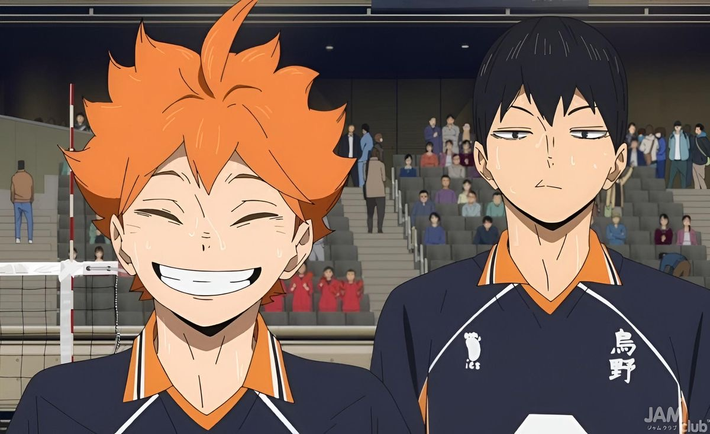
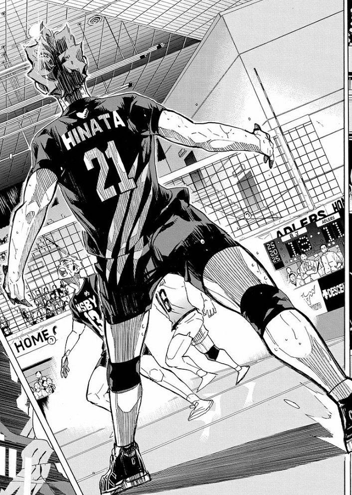
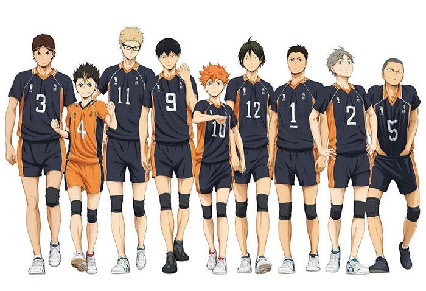
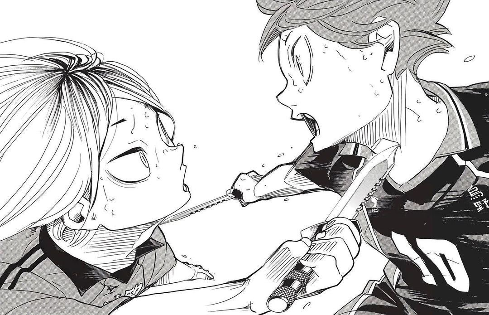
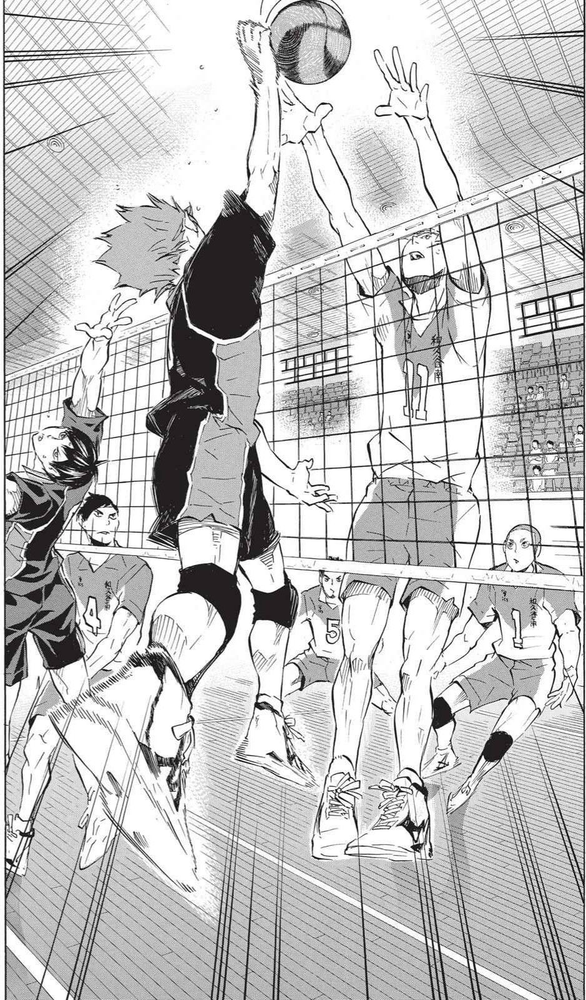
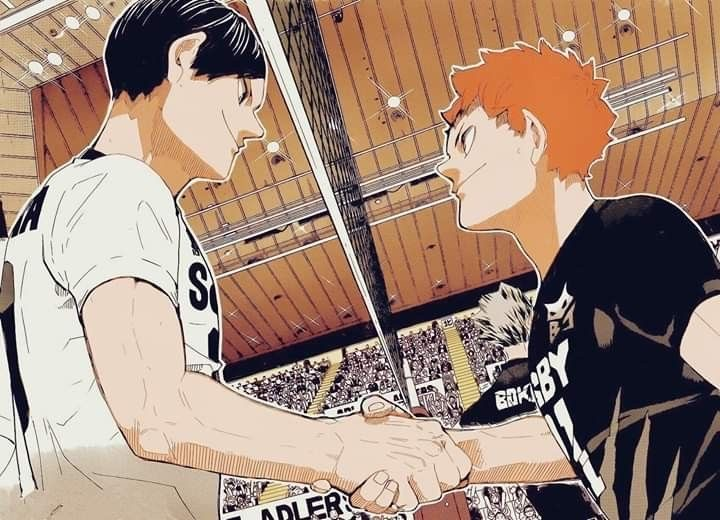

Không sở hữu những nhân vật có sức mạnh phi thường hay những kỹ năng vượt xa thực tế, Haikyuu!! kể về bóng chuyền bằng những trận đấu căng thẳng, những lần thất bại và quá trình trưởng thành của từng người chơi.

Haruichi Furudate và câu chuyện về bóng chuyền
Được sáng tác bởi Haruichi Furudate, Haikyuu!! là một trong những manga thể thao nổi bật xoay quanh bóng chuyền học đường. Thay vì xây dựng thế giới nơi các nhân vật sở hữu những năng lực phi thực tế, tác phẩm đặt trọng tâm vào kỹ thuật, chiến thuật và quá trình luyện tập.
Điều này tạo nên một nền tảng khá quan trọng cho toàn bộ câu chuyện. Bóng chuyền trong Haikyuu!! không đơn giản là bối cảnh để các nhân vật cạnh tranh, mà trở thành phương tiện để họ bộc lộ cá tính, đối mặt với giới hạn và thay đổi qua từng trận đấu.
Từ một cậu bé thấp bé đến hành trình tìm vị trí trên sân
Nhân vật trung tâm của Haikyuu!! là Hinata Shoyo, một cậu bé có chiều cao không thuận lợi cho vị trí vận động viên bóng chuyền nhưng lại sở hữu niềm đam mê rất lớn với môn thể thao này.
Sau khi chứng kiến một vận động viên có vóc dáng nhỏ bé thi đấu với hình ảnh được gọi là “Người khổng lồ tí hon”, Hinata quyết định theo đuổi bóng chuyền. Tuy nhiên, con đường của cậu không hề dễ dàng. Ở cấp trung học, Hinata thiếu một tập thể đủ mạnh để phát triển khả năng của mình và cuối cùng phải nhận thất bại trước Kageyama Tobio.

Trớ trêu hơn, khi bước vào trường trung học Karasuno, Hinata phát hiện Kageyama lại trở thành đồng đội của mình.
Từ đây, câu chuyện mở ra một mối quan hệ đặc biệt. Hai người vừa cạnh tranh, vừa buộc phải học cách phối hợp để biến những điểm mạnh riêng lẻ thành sức mạnh của cả đội.
Karasuno cũng không phải một đội bóng hoàn hảo ngay từ đầu. Họ phải từng bước xây dựng lại vị thế, đối đầu với những đối thủ ngày càng mạnh và học cách thích nghi sau mỗi thất bại. Vì vậy, hành trình của đội bóng không chỉ là câu chuyện về việc giành chiến thắng mà còn là quá trình từng thành viên tìm ra cách đóng góp của mình.
Không chỉ có Hinata và Kageyama
Một trong những điểm đáng chú ý của Haikyuu!! là tác phẩm không xây dựng đội bóng xoay quanh duy nhất nhân vật chính. Mỗi thành viên của Karasuno đều có vai trò riêng, từ đội trưởng Daichi Sawamura, libero Nishinoya Yuu đến Tsukishima Kei - một trong những nhân vật có quá trình thay đổi đáng chú ý.
Hinata đại diện cho năng lượng và khát vọng tiến về phía trước. Trong khi đó, Kageyama phải học cách từ bỏ lối chơi quá thiên về cá nhân để thực sự trở thành một chuyền hai có thể kết nối đồng đội.
Daichi không phải người sở hữu kỹ năng nổi bật nhất, nhưng sự ổn định và trách nhiệm khiến anh trở thành điểm tựa của Karasuno. Nishinoya lại cho thấy một đội bóng không thể chỉ dựa vào những người ghi điểm; khả năng phòng thủ và tinh thần cứu bóng cũng có thể thay đổi hoàn toàn cục diện trận đấu.
Đáng chú ý hơn cả là Tsukishima. Ban đầu, cậu giữ khoảng cách với bóng chuyền và không muốn dành quá nhiều cảm xúc cho môn thể thao này. Nhưng qua những trận đấu quan trọng, đặc biệt khi đối đầu với những đối thủ mạnh, Tsukishima dần tìm thấy lý do để thực sự nghiêm túc với bóng chuyền.

Đối thủ không chỉ tồn tại để bị đánh bại
Haikyuu!! cũng gây ấn tượng bởi cách xây dựng các đội bóng đối thủ. Aoba Johsai, Shiratorizawa, Nekoma, Fukurodani hay Inarizaki đều có những phong cách thi đấu và hệ thống nhân vật riêng.
Điều này khiến các trận đấu không trở thành công thức đơn giản kiểu “Karasuno gặp đối thủ → luyện tập → chiến thắng”. Mỗi đội buộc Karasuno phải tìm ra một cách tiếp cận khác nhau.
Quan trọng hơn, tác phẩm không biến đối thủ thành những nhân vật chỉ có nhiệm vụ cản đường nhân vật chính. Oikawa, Ushijima, Bokuto hay nhiều vận động viên khác đều có động lực và câu chuyện riêng. Khi họ xuất hiện, người đọc không chỉ quan tâm Karasuno có thắng hay không mà còn muốn biết mỗi đối thủ sẽ phát triển như thế nào.

Cách xây dựng này giúp ranh giới giữa “nhân vật chính” và “nhân vật phụ” trở nên linh hoạt hơn. Mỗi đội bóng đều có những người đang theo đuổi mục tiêu của riêng mình.
Những trận đấu được xây dựng bằng chiến thuật và cảm xúc
Điểm mạnh lớn của manga nằm ở cách Furudate xây dựng các trận đấu. Bóng chuyền có tốc độ nhanh, mỗi pha bóng đều có thể thay đổi thế trận và manga tận dụng rất tốt đặc điểm này.
Một pha chắn bóng không chỉ là một cú nhảy. Đằng sau nó có thể là quá trình quan sát thói quen của đối thủ, phán đoán hướng tấn công và lựa chọn vị trí. Một cú chuyền cũng không đơn thuần là đưa bóng cho người đập, mà còn phụ thuộc vào khả năng đọc trận đấu và sự ăn ý giữa các thành viên.
Haikyuu!! cũng biết cách kiểm soát nhịp độ. Những đoạn tập luyện, sinh hoạt và hài hước được xen kẽ giữa các trận đấu giúp câu chuyện không trở nên quá nặng nề. Khi trận đấu bước vào thời điểm quyết định, cảm giác căng thẳng vì thế càng được đẩy lên rõ rệt.

Một manga thể thao không cần biến nhân vật thành “siêu nhân”
Khác với một số tác phẩm shounen thể thao thường đẩy năng lực nhân vật lên mức phi thực tế, Haikyuu!! phần lớn duy trì cảm giác rằng những gì xảy ra trên sân đều bắt nguồn từ luyện tập, kỹ thuật và chiến thuật.
Hinata có sức bật và tốc độ tốt nhưng không lập tức trở thành một vận động viên hoàn thiện. Kageyama là thiên tài chuyền bóng nhưng vẫn phải học cách giao tiếp và phối hợp với đồng đội. Tsukishima có khả năng quan sát tốt nhưng cũng phải trải qua quá trình tìm kiếm động lực thi đấu.
Những giới hạn ấy làm cho chiến thắng trở nên thuyết phục hơn. Nhân vật có thể tiến bộ, nhưng sự tiến bộ không diễn ra chỉ sau một vài khoảnh khắc. Họ phải tập luyện, thất bại, điều chỉnh và tiếp tục thi đấu.
Haikyuu!! - Một câu chuyện về việc tiếp tục tiến về phía trước
Điều làm Haikyuu!! nổi bật không nằm ở việc bộ truyện tạo ra một thế giới bóng chuyền phi thường, mà ở cách tác giả biến những điều rất bình thường của thể thao thành những khoảnh khắc giàu cảm xúc.
Nhân vật có thể thất bại. Đối thủ có thể mạnh hơn. Một trận đấu có thể kết thúc không theo cách người đọc mong muốn. Nhưng sau mỗi lần như vậy, các nhân vật lại có thêm một lý do để tập luyện và bước tiếp.
Vì thế, Haikyuu!! không chỉ phù hợp với những độc giả yêu thích bóng chuyền. Đây còn là một manga về cạnh tranh, tình đồng đội, thất bại và quá trình trưởng thành. Tác phẩm cho thấy một người không nhất thiết phải là người giỏi nhất mới có thể tạo ra ảnh hưởng; đôi khi, điều quan trọng hơn là biết mình có thể đóng góp điều gì cho tập thể và tiếp tục hoàn thiện nó qua từng ngày.

Nếu phải tóm lại sức hút của Haikyuu!! trong một câu, có lẽ đó là: không phải ai cũng có thể trở thành người mạnh nhất, nhưng bất kỳ ai cũng có thể tiến bộ nếu tiếp tục bước lên sân.